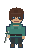
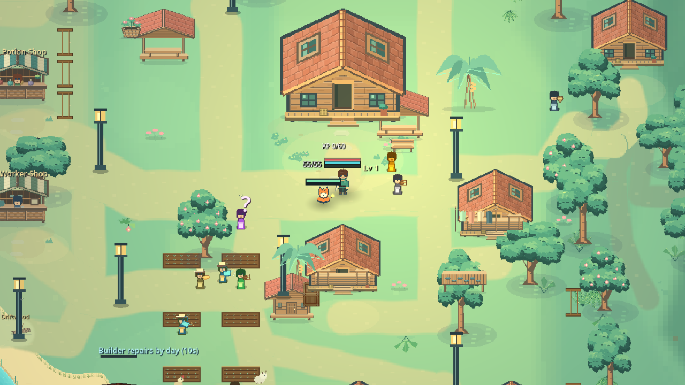
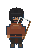
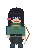

THE COASTBLADE / SWORD
Adam
A survivor with a village to defend and a promise to keep. Your adventure begins with him.
A MALAYSIAN COASTAL ADVENTURE
Step into BESUT. Defend a living village, restore its forests and cross a dangerous sea to reunite three friends.
Discover the adventure2D pixel-art survival action RPG · Android

FIELD NOTE 01 / BESUT VILLAGE01 / THE STORY
A fishing trip separates Adam from his friends, Arjun and Mei Ling. A sea turtle carries him to safety, and the people of BESUT give him a place to begin again.
Now he has two reasons to keep going: protect the village that helped him, and find the friends still out there.
Every tree matters. Every friend matters.
02 / YOUR FIELD GUIDE
From quiet village paths to open water and strange realms, each place asks you to protect something worth saving.
Prepare during the day, then defend against threats at night. Your village needs healthy trees, safe homes and people who can help.
03 / THE PEOPLE YOU FIGHT FOR
Begin the journey as Adam. Search for Arjun and Mei Ling, then bring their strength back to BESUT.

THE COASTBLADE / SWORD
A survivor with a village to defend and a promise to keep. Your adventure begins with him.

THE DUSK REAPER / SCYTHE
A missing friend beyond the sea. Reach the Kraken's island and bring him back to safety.

THE REEDSHOT / BOW
A friend held in the Citadel. Follow the realm's road, overcome its dangers and reunite the group.
04 / BEYOND THE SCREEN
The story is a game. Caring for the world can be part of your everyday life.
A SMALL ACTION FOR TODAY
Choose an action. Carry the message with you.
Choose at least one action to make your message.
05 / BEFORE YOU SET OUT
Arrived here through the QR in Settings? Welcome to the world behind the code.
A 2D pixel-art survival action RPG that connects village care, action combat, pet companions and ocean exploration in a Malaysian coastal setting inspired by Besut, Terengganu.
Use the joystick to move, Attack to fight and Sprint to move faster. Tap nearby people and objects to interact. Your Pack holds supplies, and Settings lets you adjust interface size, opacity and control positions.
This is the game's field guide. Play takes place in the Protect BESUT Android app. This page helps you meet its world and share its environmental message.
The QR opens this public guide. It does not share your save, inventory, location or account information.
A MESSAGE WORTH PASSING ON